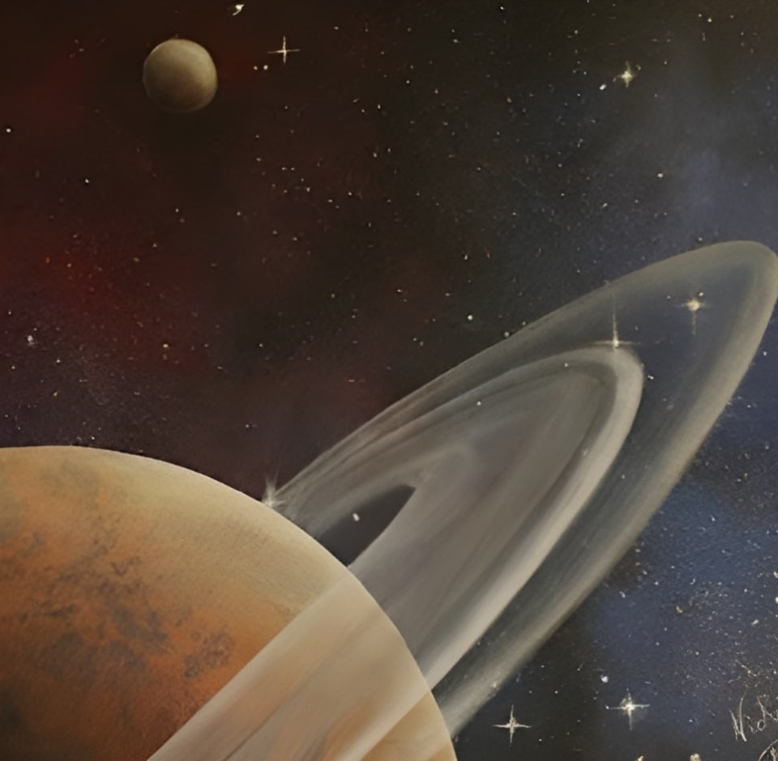

Introducing Astral Connections
A celestial exploration rendered in luminous pigments on canvas, depicting distant worlds and stars interconnected by ethereal cosmic pathways. Some connections appear as brilliant, shimmering bridges of light, while others manifest as subtle gravitational threads, illustrating the varying intensities of astral relationships across the vast tapestry of space.
Explore the Cosmic Symbolism